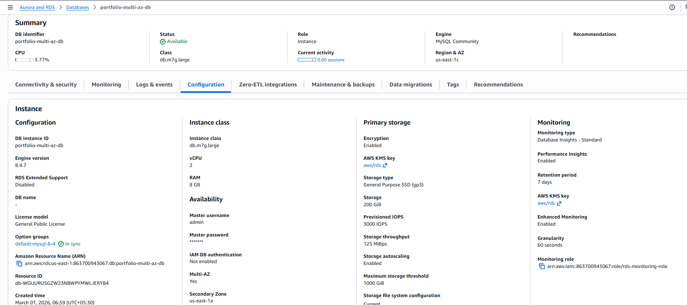
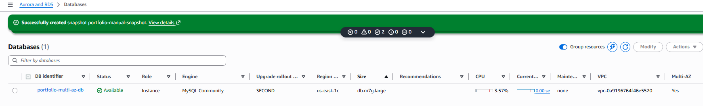
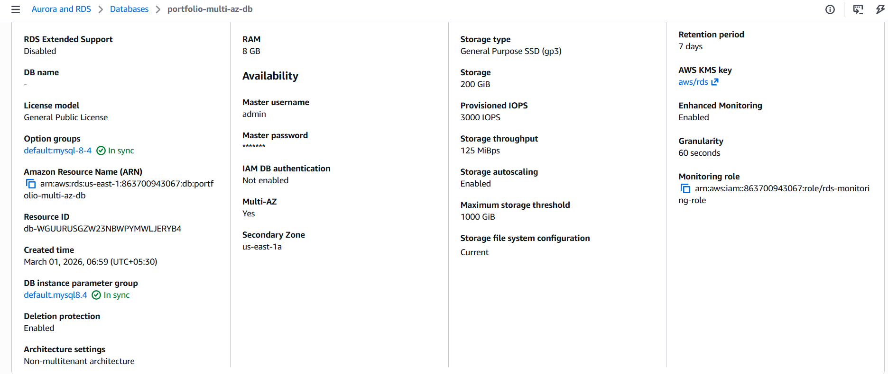
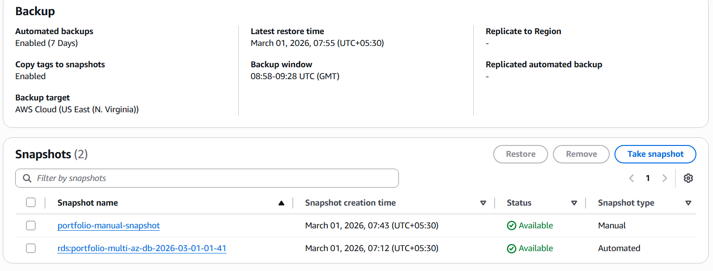
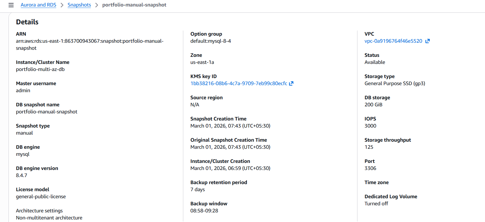

RDS MySQL 8.4 Multi-AZ High Availability Deployment
Designed and deployed a production-ready Amazon RDS MySQL 8.4 database with Multi-AZ high availability, automated backups, encryption, provisioned IOPS, and failover protection.
Objective
- Deploy a highly available MySQL database
- Enable synchronous replication across AZs
- Configure automated backups with PITR
- Implement encryption using AWS KMS
- Enable deletion protection
- Validate manual snapshot functionality
Architecture Overview
Application → RDS Primary (AZ-1) → Synchronous Replication → Standby (AZ-2)
- Multi-AZ enabled
- Automatic failover
- Standby instance not directly readable
- Data replicated synchronously
Database Configuration
- Engine: MySQL 8.4.7
- Instance Class: db.m7g.large
- vCPU: 2
- RAM: 8 GB
- Storage: 200 GiB (gp3)
- Provisioned IOPS: 3000
- Storage Throughput: 125 MiB/s
- Storage Autoscaling Enabled
High Availability Design
- Multi-AZ: Enabled
- Secondary Zone: us-east-1a
- Automatic failover
- Deletion protection: Enabled
- Public access: Disabled
Backup & Recovery Strategy
- Automated backups enabled (7 days retention)
- Point-in-Time Recovery supported
- Manual snapshot created and verified
- Copy tags to snapshots enabled
Security & Monitoring
- KMS Encryption enabled
- AWS-managed KMS key (aws/rds)
- Performance Insights enabled
- Enhanced Monitoring enabled
- Granularity: 60 seconds
- Monitoring IAM role configured
Failure & Validation
- Confirmed Multi-AZ deployment active
- Verified snapshot creation success
- Validated automated backup window
- Confirmed deletion protection enforced
Screenshots & Evidence






Outcome
Successfully deployed a production-grade RDS Multi-AZ architecture with automated backups, encryption, monitoring, and failover protection. The system ensures durability, resilience, and operational safety.